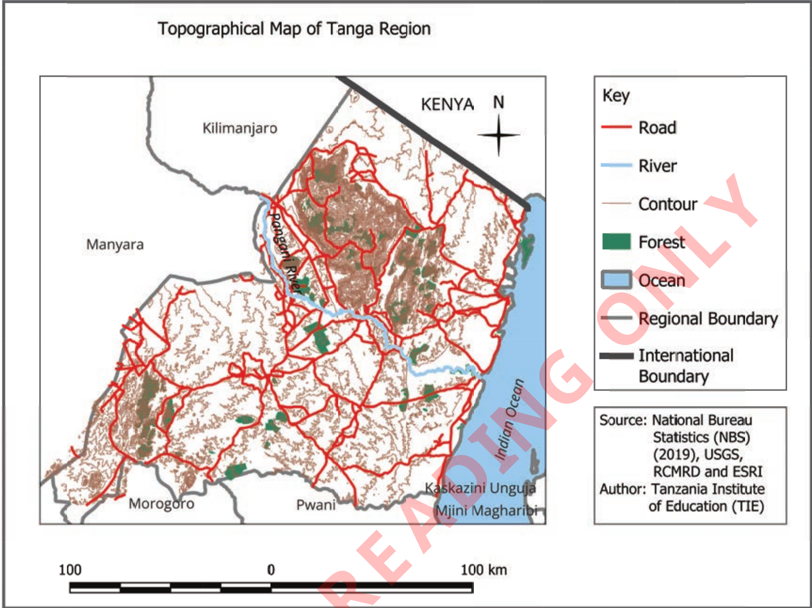

Figure 1: Topographical map of Tanga region
Political maps
These maps provide information about the international, regional, district and other local boundaries. They also show important areas such as government buildings, capital cities, and towns, as shown in Figure 2. Political maps are helpful for researchers, learners, and visitors who need to understand the administrative boundaries of a certain area.
Political maps change over time. Several factors can cause changes in a political map. These include wars, boundaries conflicts between countries, the nationalism, political agreements, and a boundary change within a country. Because of these factors, political maps are updated to show the current national boundaries or other specific areas.